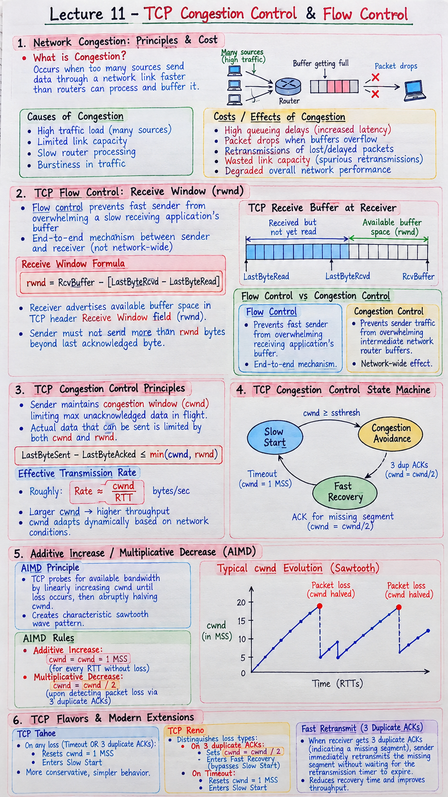

Short Notes & Visual Summary
Handwritten / quick summary notes for Lecture 11:

Click image to open high-resolution version in new tab
Network Congestion Principles & Cost of Congestion
1.1 Definition of Congestion
Network Congestion occurs when too many sources attempt to send data through a network link faster than link routers can process and buffer it.
1.2 Causes & Costs of Congestion
- High queueing delays as router buffers fill up.
- Packet drops when router buffers overflow.
- Wasted link capacity due to spurious retransmissions of delayed packets.
TCP Flow Control: The Receive Window (rwnd)
2.1 Flow Control vs. Congestion Control
- Flow Control: Speed-matching service preventing a fast sender from overwhelming a slow receiving application's buffer.
- Congestion Control: Mechanism preventing sender traffic from overwhelming intermediate network router buffers.
2.2 TCP Receive Buffer Architecture
The receiver advertises available buffer space in the TCP header Receive Window (rwnd) field.
$$rwnd = RcvBuffer - [LastByteRcvd - LastByteRead]$$TCP Congestion Control Principles & State Machine
3.1 The Congestion Window (cwnd)
TCP sender maintains a state variable cwnd (Congestion Window) limiting max unacked data in flight:
$$\text{LastByteSent} - \text{LastByteAcked} \le \min(cwnd, rwnd)$$3.2 Dynamic Transmission Limit Formula
The effective transmission rate is roughly $\frac{cwnd}{RTT}$ bytes/sec.
Additive Increase / Multiplicative Decrease (AIMD)
4.1 AIMD Sawtooth Pattern
TCP probes for available bandwidth by linearly increasing $cwnd$ until loss occurs, then abruptly halving $cwnd$, creating a characteristic sawtooth wave pattern.
- Additive Increase: $cwnd = cwnd + 1 \text{ MSS}$ for every RTT without loss.
- Multiplicative Decrease: $cwnd = cwnd / 2$ upon detecting packet loss via triple duplicate ACKs.
TCP Flavors & Modern Extensions
5.1 TCP Tahoe vs. TCP Reno
- TCP Tahoe: On any loss (timeout OR 3 dup ACKs), resets $cwnd = 1 \text{ MSS}$ and enters Slow Start.
- TCP Reno: Distinguishes loss types. On 3 dup ACKs, cuts $cwnd = cwnd / 2$ and enters Fast Recovery (bypasses Slow Start). On Timeout, resets $cwnd = 1 \text{ MSS}$.
5.2 Fast Retransmit via 3 Duplicate ACKs
Receiving 3 duplicate ACKs triggers immediate retransmission of missing segment before timer expiration.
Original PDF Notes
Below is the original PDF document for reference: